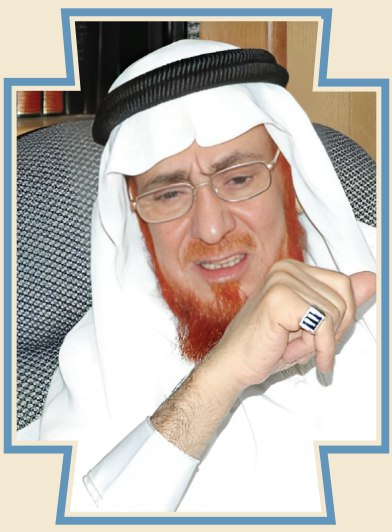

أبو عبدالرحمن بن عقيل الظاهري
(١٩٤٢م - الأن)
المقدمة
أديب وباحث عقدي وفقيه وعالم دين، وأحد العلماء الذين تفردوا بفكرهم
وتمسكهم بالقرآن والسنة. تأثّر الظاهري بالمدرسة الظاهرية التي استقى
لقبه من اسمها، وتتلمذ على يدي العلّامة ابن باز -رحمه الله-، والشيخ أبو
تراب الظاهري. كانت له إسهامات جمة في المشهد الثقافي والديني المحلي،
فمُنح وسام الملك عبدالعزيز من الدرجة الأولى، وحاز على لقب «شخصية العام
الثقافية 2023».